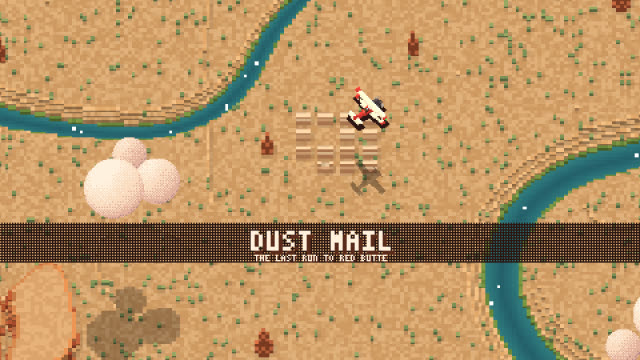
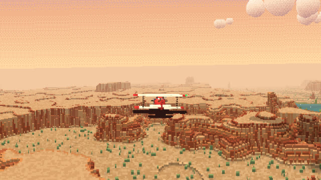
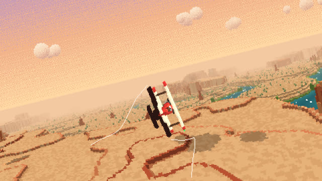
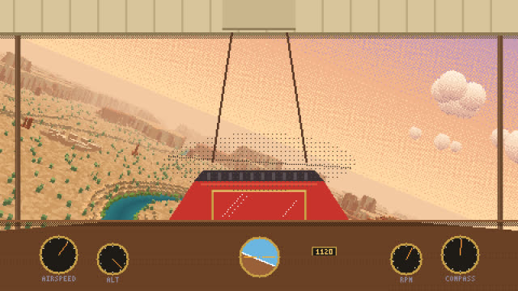

작업 흐름
- 입력
- 주제 한 줄(무엇이 · 어디를 · 언제 나는지), 참고 이미지나 영상
- 브리프
- 기체(무게 · 팔레트 · 부품 · 항법등), 세계(높이를 만드는 법 · 층별 색 · 물 · 소품 · 랜드마크), 시간대와 구름, 조종석, 비행 계획 표
- 설계
- 복셀 모델을 층으로 자른 기체, 정수 계단으로 쌓은 지형, 원반을 쌓은 구름, 그 기체만의 조종석. 전체 지도(
?map=1)와 기체 시트(?sheet=craft)로 확인 - 확인
- 콘택트 시트와 스틸 채점, 자동 검사(결정성, 지면 여유, 항법등 좌우, 뱅크의 관성과 오버슈트, 롤의 예비 동작, 카메라 지연, 속도)
- 출력
- 최근접 확대로 선명한 1920×1080 MP4(엔진 · 바람 · 롤 소리 합성), 영화를 반복하다 클릭하면 조종이 넘어오는 라이브 페이지
cd sprite-stack-flight/examples/canyon-biplane
node ../../scripts/check.mjs index.html
node ../../scripts/render.mjs index.html --q map=1 --stills 0
node ../../scripts/render.mjs index.html --sheet 8
node ../../scripts/render.mjs index.html
node ../../scripts/new-flight.mjs ../../../my-flight # 새 주제요구 사항: Node + Playwright Chromium, ffmpeg. GPU와 네트워크가 필요 없고, 30초 영상을 CPU로 1분 안팎에 렌더합니다. 단계별 순서는 SKILL.md에 있습니다.
샘플
같은 엔진과 키트로 주제만 바꿔 새로 설계한 예제 두 편과 시작 템플릿, 그리고 설계를 확인하는 화면입니다. 카드를 누르면 새 탭에서 그 장면이 그 순간에 멈춘 채 열리고, 브라우저가 직접 그립니다.
Dust Mail 32초 · 노을 무렵의 사막
빨간 우편 복엽기의 마지막 비행. 붉은 지층의 메사와 강, 어도비 마을, 한 번의 롤, 놋쇠 계기판의 개방형 조종석입니다.

위 시점 · 1.8초강 위의 우편기over
고도만큼 떨어진 그림자, 땅 위를 흘러가는 구름 그림자, 제목 띠

뒤 시점 · 9초메사 사이로chase
층마다 한 색인 지층, 어두운 남쪽 벽, 화면 열마다 한 줄씩 쌓은 원근 지형

뒤 시점 · 16초한 번의 롤roll
작게 반대로 모았다가 도는 롤, 날개 끝 연기, 반쯤 따라 기우는 카메라

조종석 · 21초날개 아래 자리cockpit
윗날개, 버팀대, 덮개, 놋쇠 계기, 덮개 앞에서 도는 프로펠러
The Winter Post 36.5초 · 푸른 시간의 피오르
겨울 우편을 싣고 피오르를 거슬러 오르는 비행선. 무거워서 늦게 기울고 롤은 하지 않으며, 곤돌라 창만 따뜻합니다.
확인 화면 설계 단계
장면을 쓰기 전에 보는 화면입니다. 시작 템플릿도 같은 흐름으로 바꿔 씁니다.
실제 작품
이 레포에서 만든 스킬입니다. X에서 본 32 KB 스프라이트 스태킹 비행 시뮬레이터의 기법(층을 쌓은 기체와 지형, 세 시점)만 가져왔고, 엔진과 키트, 두 예제의 기체 · 세계 · 조종석은 모두 이 레포의 코드입니다.
「Dust Mail」 · 32초사막의 복엽기, 라이브 페이지sprite-stack-flight/demo/canyon-biplane.html
「The Winter Post」 · 36.5초피오르의 비행선, 라이브 페이지sprite-stack-flight/demo/fjord-airship.html
원본 · Pavian의 X 게시물"3D 아님 폴리곤도 없음" · 2026년 11월x.com/meta_pavy
소개된 작품 · Dash의 X 게시물No 3D engine, no polygons, 32 KB of codex.com/creativedash
그 작품의 라이브 데모스프라이트 스태킹 전투기와 섬remix.ui8.ai/fly
링크
- SKILL.md 워크플로
- 폴더 lib · scripts · templates · references · examples
- README.md 빠른 시작
- templates/BRIEF.md 브리프 틀과 스틸 검토 기준
- references/LOOK.md 픽셀, 계단 지형, 빛, 시점, 참고 자료 읽기
- references/KIT.md 엔진과 부품 API
- references/LESSONS.md 겪은 문제와 해결